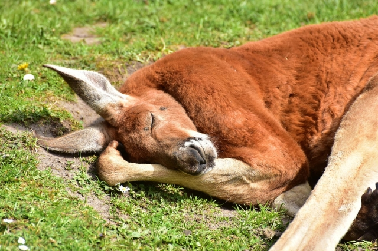

| カンガルーとは |
オオカンガルーやアカカンガルー、クロカンガルーなど増加傾向にある種類もありますが、絶滅の危機に瀕している種も少なくありません。
オーストラリアではカンガルーをはじめとする野生動物が突然道路に飛び出してくるため、自動車との衝突事故が多発しています。
オーストラリアの国獣とされ、オーストラリアを代表する動物とされています。 |
| アンサー① |
カンガルーより小型の( ワラビー )という動物もいますが、二方の分類学的な区別はありません。 |
|
|
大型の（狭義の）カンガルー、小型のワラビー、樹上性のキノボリカンガルーなどがいます。
|
| アンサー② |
動物の名前を訊ねたところ現地人が「( わからない )＝カンガルー」と答えたという説があります。 |
|
|
“カンガルー”という名前だと誤解してしまい、この動物の通称となったといわれていますが、これは俗説です。
|
| アンサー③ |
オーストラリアではカンガルーを( ルー )と呼び、有袋類全般の子供をジョーイと呼びます。 |
|
|
カンガルー衝突被害のため車に付けられるバンパーを、ルー・バー (Roo Bar) と呼んでいます。
|
| アンサー④ |
( 後肢 )が発達しており、太い尾でバランスをとりながら跳躍します。 |
|
|
これにより、四肢を使うよりも少ないエネルギー消費で、高速移動ができます。
2km近くの距離を時速40kmで跳躍し続けることができますが、後退することはできません。
|
| アンサー⑤ |
蹴る力が非常に高く、人間ならば( 内臓 )が破裂しかねない程の破壊力を持つ。 |
|
|
尻尾で体を支えた両足での前蹴りで攻撃します。
|
| アンサー⑥ |
大型のアカカンガルーは、両手を繰り出して( 殴り合う )ことがあります。 |
|
|
特に顕著なのは発情期で、周囲から近づく別の雄を攻撃するようになります。
この際、上半身を大きく見せるポンピングという行いをすることがあります。
|